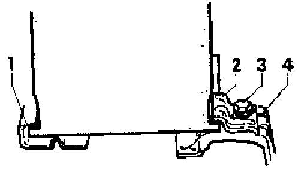

Removal and Installation
Battery, removing and installing
CAUTION! Before working on the electrical system:
- Obtain radio anti-theft code.
- Ignition OFF!
- Disconnect battery Ground (GND) strap.
Notes:
- See Service Precautions, warnings and safety measures
- Some early production vehicles are equipped with batteries that are 190 mm (7.5 in.) tall. Later production vehicles are equipped with batteries that are 175 mm (6.9 in.) tall.
- The larger battery is no longer available. If necessary, replace it with the later 175 mm (6.9 in) battery.
Removing
- Disconnect battery cable at negative (-) terminal.
- Disconnect battery cable at positive (+) terminal.

- Remove battery hold-down nut -3- and clamp -2-.
- Remove battery.
Installing

Note:
- The latest generation batteries are equipped with a central gas venting system and a fine mesh flame trap - arrow-.
- Function: Gases produced during charging escape through a central opening on side of upper cover A flame trap is integrated into the this position which prevents the flammable gases in the battery from igniting.
- It is extremely important to check that the hose is connected to the central gas venting system and that it has not been disconnected while installing. Only then can the battery vent via the fine mesh flame trap and hose.
- The flame trap is comprised of a small round fiberglass mat with a diameter of 15 mm and a thickness of 2 mm. It works on a similar principle to a valve therefore it allows the gases produced in the battery to vent.
- Position battery and seat lower lip -1- in clamping strip, as shown.
- Retain other lip of battery at battery securing pedestal -4- using hold-down -2- and M8 x 2 bolt -3-.

- Tighten bolt -3- to 20 Nm (15 ft lb).
- Connect battery positive (+) cable and negal (-) cable or Ground (GND) strap.
Tightening torque (terminal clamping bolt):
Nm (44 in lb)
CAUTION! If the battery is not secured properly, normal shock and vibration can damage the battery plates, which result in premature battery failure.
Notes:
- Battery terminal clamps must only be fitted hand without force in order to prevent dam~to the battery housing.
- Battery terminals must no longer be grease
- After reconnecting battery:
- Activate vehicle vehicle equipment such as rc clock and power windows as per Repair Manu(' and/or Owner's Manual.
- On vehicles equipped with OBD II, activate readiness code.